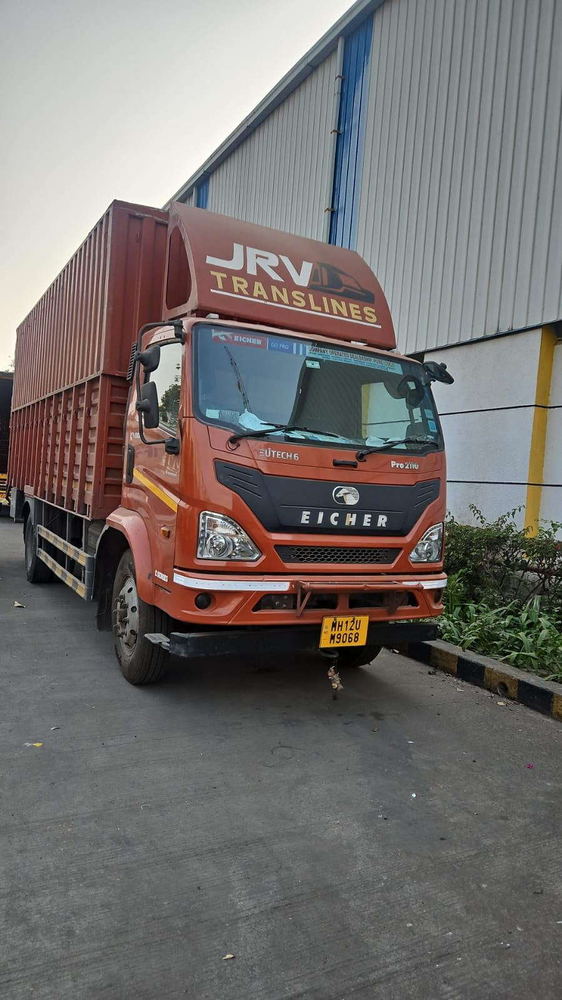

About us
Our legacy
Moving freight since 2009.
JRV Translines delivers reliability, scale and operational excellence to India's top supply chains. Over a decade of uninterrupted logistics across Maharashtra and beyond.
- Pan-India reach. Extensive route coverage nationwide.
- Modern vehicles. Consistent transit times.
- Responsive scaling. Immediate adaptation to volume spikes.
